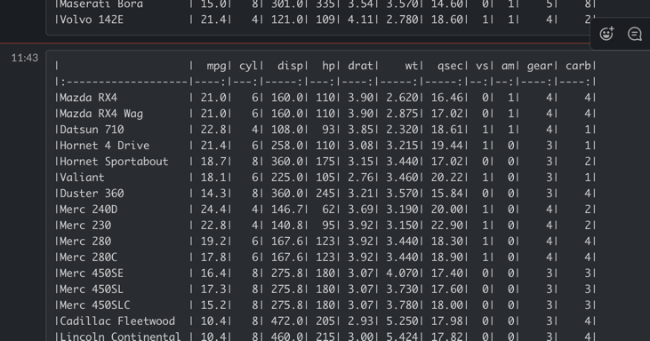

vignettes/usecase-slackbot-google-analytics.Rmd
usecase-slackbot-google-analytics.RmdThis use case will use Cloud Run to create an R API that Slack can interact with.
The application will download some information from Google Analytics and send it to Slack for review. I’m most interested in what new websites are linking to my blog so will fetch that data for the endpoint, but this can be adapted upon for your own needs.
The workflow needed is:
This will use googleAnalyticsR to get the data. I want to see what sessions came in the last 30 days with a referrer I haven’t seen before in the previous year.
library(googleAnalyticsR)
library(dplyr)
ga_id <- 12345678
# get last years referrer data
two_years <- google_analytics(
ga_id,
date_range = c(Sys.Date()-(365), Sys.Date()),
dimensions = c("date","fullReferrer","landingPagePath"),
metrics = "sessions",
rows_per_call = 50000,
max = -1)
last30Days <- two_years %>% filter(date >= Sys.Date() - 30)
previousDays <- two_years %>% filter(date < Sys.Date() - 30)
# the referrers seen in last30days but not previously
new_refs <- setdiff(unique(last30Days$fullReferrer),
unique(previousDays$fullReferrer))
last_30_new_refs <- last30Days %>%
filter(fullReferrer %in% new_refs)Now I’ll put the call behind a plumber API endpoint. The script will assume authentication will come from a local json auth file, that will be in the deployment. To make it a bit more general, the GA viewId will be able to be sent as a parameter, that will work for all GA accounts the auth file has access to.
library(googleAnalyticsR)
library(dplyr)
# the function will be called from the endpoints
do_ga <- function(ga_id){
# get last years referrer data
two_years <- google_analytics(
ga_id,
date_range = c(Sys.Date()-(365), Sys.Date()),
dimensions = c("date","fullReferrer","landingPagePath"),
metrics = "sessions",
rows_per_call = 50000,
max = -1)
last30Days <- two_years %>% filter(date >= Sys.Date() - 30)
previousDays <- two_years %>% filter(date < Sys.Date() - 30)
# the referrers seen in last30days but not previously
new_refs <- setdiff(unique(last30Days$fullReferrer),
unique(previousDays$fullReferrer))
last_30_new_refs <- last30Days %>%
filter(fullReferrer %in% new_refs)
last_30_new_refs
}
#' @get /
#' @serializer html
function(){
"<html><h1>It works!</h1></html>"
}
#' @get /last-30-days
#' @serializer csv
function(ga_id){
# get last years referrer data
do_ga(ga_id)
}To support the plumber API a server file is also created:
pr <- plumber::plumb("api.R")
pr$run(host='0.0.0.0', port=as.numeric(Sys.getenv('PORT')), swagger=TRUE)And a Dockerfile that needs plumber, googleAnalyticsR and readr
FROM rstudio/plumber
RUN install2.r --error \
-r 'http://cran.rstudio.com' \
googleAnalyticsR readr
COPY ["./", "./"]
ENTRYPOINT ["Rscript", "server.R"]The files above are put into a folder “slackbot”
|
|- api.R
|- Dockerfile
|- server.RThe app is now deployed to Cloud Run via cr_deploy_plumber()
library(googleCloudRunner)
cr_deploy_plumber("slackbot/")
#ℹ 2021-03-19 10:09:23 > Using existing Dockerfile found in folder
#ℹ 2021-03-19 10:09:23 > Uploading inst/slackbot/ folder for Cloud Run
#ℹ 2021-03-19 10:09:23 > Dockerfile found in inst/slackbot/
#
#── #Deploy docker build for image: gcr.io/your-project/slackbot ─────────────────
#
#── #Upload inst/slackbot/ to gs://your-bucket/slackbot.tar.gz ───────
#ℹ 2021-03-19 10:09:23 > Uploading slackbot.tar.gz to your-bucket/slackbot.tar.gz
#ℹ 2021-03-19 10:09:23 > File size detected as 789 bytes
#ℹ 2021-03-19 10:09:23 > Google Cloud Storage Source enabled: /workspace/deploy/
#ℹ 2021-03-19 10:09:24 > Cloud Build started - logs:
# https://console.cloud.google.com/cloud-build/builds/0f57a7ae-d64d-4d96-85ec-9e2ad64de52d?project=1080525199262
#ℹ Starting Cloud Build
#→ Status: WORKING
# ...
#
# ── #> Launching CloudRun image: gcr.io/your-project/slackbot:6a97870b-038b-4fe3-a3ea-4e5e6876c1aa ──────────────────────
# ...
# ── #> Running at: https://slackbot-asfkbkdf-ew.a.run.app ───────────────────────────────────────────────────────────────────
#==CloudRunService==
#name: slackbot
#location: europe-west1
#lastModifier: 12345@cloudbuild.gserviceaccount.com
#containers: gcr.io/your-project/slackbot:6a97870b-038b-4fe3-a3ea-4e5e6876c1aa
#creationTimestamp: 2021-03-19T09:14:48.727922Z
#observedGeneration: 2
#url: https://slackbot-asfkbkdf-ew.a.run.app It will take a few minutes to first build the Docker image (cup of tea time) then deploy it to Cloud Run. The Docker image building will be quicker the next time it builds due to the kaniko_cache=TRUE default enabling skipping over R library builds in the cache.
Once finished the build should return the Cloud Run URL.
The homepage should work but the Google Analytics endpoint (/last-30days?ga_id=1234567) won’t yet as we haven’t included the authentication file.
To make working and updating the API easier, a build trigger will build the Dockerfile and deploy the API upon each git commit.
The project files above are added to a git repository and published on say GitHub, and the GitHub repo is added to Cloud Build as described in the Build Triggers docs - in my case its the googleCloudRunner’s own repo and I put everything in the inst/slackbot folder so that alters the directory in the buildsteps below.
Once the files are on GitHub a build trigger is created which will mimic what cr_deploy_plumber() did earlier - it will build the Dockerfile and re-deploy the Cloud Run app. To have more control, we now use cr_buildstep() templates to make the build ourselves.
If you tried to run the GA endpoint in the logs you can see that the default Client Id for Google Analytics won’t allow non-interactive use - we need to use our own clientId and auth file. These sensitive files are uploaded to Secret Manager so they can be used more securely within builds via cr_buildstep_secret()
library(googleCloudRunner)
bs <- c(
# get secret files
cr_buildstep_secret("mark-edmondson-gde-clientid", "client.json",
dir = "inst/slackbot/"),
cr_buildstep_secret("googleanalyticsr-tests","auth.json",
dir = "inst/slackbot/"),
# build with the same name as deployed
cr_buildstep_docker(
image = "slackbot",
kaniko_cache = TRUE,
dir = "inst/slackbot/"
),
#deploy the app
cr_buildstep_run(
"slackbot",
image = "gcr.io/$PROJECT_ID/slackbot:$BUILD_ID",
env_vars = c("GAR_CLIENT_JSON=client.json",
"GA_AUTH_FILE=auth.json")
)
)
build_yml <- cr_build_yaml(bs)
build_obj <- cr_build_make(build_yml)
# setup trigger of build
repo <- cr_buildtrigger_repo("MarkEdmondson1234/googleCloudRunner")
cr_buildtrigger(
build_obj, name = "slackbot-trigger", trigger = repo,
description = "Deploying the Slackbot example",
includedFiles = "inst/slackbot/**"
)I now reference Slack’s dev docs on how to create a Webhook URL which is of the form https://hooks.slack.com/services/XXXX6/B0YYYYYY/3rNZZZZZ There is also useful info on the formatting of the messaging and you can make test calls with curl and httr::POST().
I will use httr::POST() in the API to pass along the GA data, so now is a good time to test with the Slack format.
library(httr)
slack_url <- "https://hooks.slack.com/services/XXXX6/B0YYYYYY/3rNZZZZZ"
# it works!
POST(slack_url, verbose(), body = list(text = "Hello World"), encode = "json")
# what does CSV format looks like?
the_body <- list(
text = paste0("```\n",
paste0(collapse = "\n",knitr::kable(mtcars)),
"```\n"
)
)
POST(slack_url, verbose(), body = the_body, encode = "json")I played around with what exactly to send to Slack for a data.frame and ended up with the above, which looked like this in Slack:

To call the Slack bot, the API needs to collect the data then make a HTTP GET request above itself to the Slack URL.
The R API is now modified to include this new endpoint:
library(googleAnalyticsR)
library(dplyr)
library(httr)
# the function will be called from the endpoints
do_ga <- function(ga_id){
# get last years referrer data
two_years <- google_analytics(
ga_id,
date_range = c(Sys.Date()-(365), Sys.Date()),
dimensions = c("date","fullReferrer","landingPagePath"),
metrics = "sessions",
rows_per_call = 50000,
max = -1)
last30Days <- two_years %>% filter(date >= Sys.Date() - 30)
previousDays <- two_years %>% filter(date < Sys.Date() - 30)
# the referrers seen in last30days but not previously
new_refs <- setdiff(unique(last30Days$fullReferrer),
unique(previousDays$fullReferrer))
last_30_new_refs <- last30Days %>%
filter(fullReferrer %in% new_refs)
last_30_new_refs
}
#' @get /
#' @serializer html
function(){
"<html><h1>It works!</h1></html>"
}
#' @get /last-30-days
#' @serializer csv
function(ga_id){
# get last years referrer data
do_ga(ga_id)
}
#' @get /trigger-slack
#' @serializer json
function(ga_id){
# get last years referrer data
last_30_new_refs <- do_ga(ga_id)
the_body <- list(
text = paste0("```\n",
paste0(collapse = "\n",knitr::kable(last_30_new_refs)),
"```\n")
)
POST(slack_url, body = the_body, encode = "json")
}We also add knitr to help with rendering the output in the Dockerfile (httr is already a depdency for googleAnalyticsR):
FROM rstudio/plumber
RUN install2.r --error \
-r 'http://cran.rstudio.com' \
googleAnalyticsR readr knitr
COPY ["./", "./"]
ENTRYPOINT ["Rscript", "server.R"]After making the changes to the Dockerfile and api.R, we commit the changes to redeploy via the Build Trigger